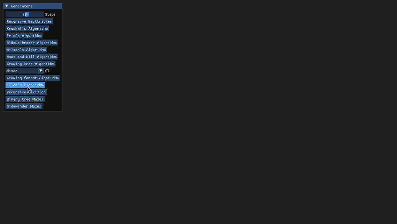

Eller’s Algorithm
Building a perfect maze one row at a time, remembering only the current row
Eller’s Algorithm #
Eller’s Algorithm builds the maze one row at a time, and it only ever remembers the current row. Every room in the row carries a set id, and rooms with the same id are already connected. For each row, go along it and, for each pair of neighbouring rooms in different sets, randomly decide whether to knock down the wall between them and merge the two sets. Then, for each set, knock down the wall below at least one of its rooms. Without that, the set would be cut off from the rest of the maze. Those rooms carry their set id into the next row, and every other room in the next row starts a new set.
The last row is different. There is no row below, so every neighbouring pair still in different sets gets merged, and everything ends up connected. Since it only remembers one row, Eller’s can generate a maze of any height, even one that never ends.
The two chances, for merging sideways and for connecting down, control the texture, so try different values.

Pseudocode #
row 0: every room gets a new set id
for each row of rooms:
for each pair of neighbouring rooms in this row:
if their sets differ and (this is the last row or a coin flip says so):
knock out the wall between them; merge the two sets
if this is the last row: done
for each set in this row:
pick at least one room in it; knock out the wall below each pick
those rooms in the next row carry the set id
every other room in the next row gets a new set idSolution #
ellers :: proc(maze: ^[COLS][ROWS]Cell, merge_chance, down_chance: f32) {
W :: (COLS - 1) / 2 // rooms per row
MAX_IDS :: W * ((ROWS - 1) / 2 + 1) // more ids than we can ever hand out
sets: [W]int // set id of each room in the current row
next_id := W
for i in 0..<W do sets[i] = i
connected: [MAX_IDS]bool // set ids that already connect down
for y: i32 = 1; y < ROWS - 1; y += 2 {
last := y == ROWS - 2
// open every room in this row
for i in 0..<W {
maze[2*i + 1][y] = .PATH
}
// horizontal pass
for i in 0..<(W - 1) {
if sets[i] == sets[i + 1] do continue
if !last && rand.float32() >= merge_chance do continue
// knock out the wall between room i and room i + 1
maze[2*i + 2][y] = .PATH
// merge: relabel the whole set, not just one room
old, keep := sets[i + 1], sets[i]
for j in 0..<W do if sets[j] == old do sets[j] = keep
}
if last do break
// vertical pass: visit the rooms in a random order
order: [W]int
for i in 0..<W do order[i] = i
rand.shuffle(order[:])
connected = {}
down: [W]bool
for i in order {
// the first room of a set we meet always connects down, the rest by chance
if connected[sets[i]] && rand.float32() >= down_chance do continue
connected[sets[i]] = true
down[i] = true
maze[2*i + 1][y + 1] = .PATH
}
// rooms that connected down keep their set; every other room starts a new one
for i in 0..<W {
if !down[i] {
sets[i] = next_id
next_id += 1
}
}
}
}
generate :: proc(maze: ^[COLS][ROWS]Cell) {
ellers(maze, 0.5, 0.2)
}Run it, press space a few times, and you’ll get a new maze each time.
odin run .